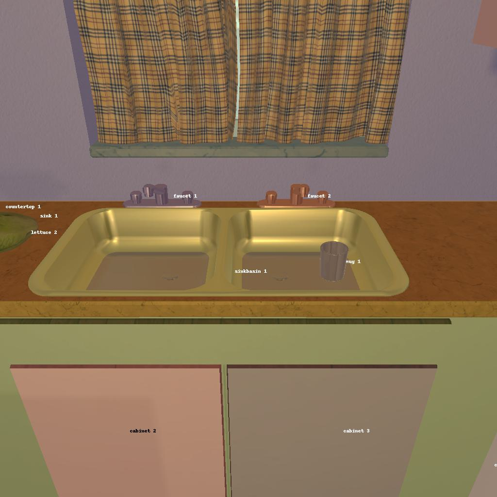

---------------------------------------------------------task: 14---------------------------------------------------------
--------------------------------------------------------------------------------------------------------------------------------------------------------------------
--------------------------------------------------------------------------------------------------------------------------------------------------------------------
Step:--------------------------------------------------------------------------15-------------------------------------------------------------------------------
----------------------------------------
VLM Prompt:
Image1:
Image2:
**Instruction**
1. Analyze the provided image to identify all visible household objects, focusing on those relevant to the task description "put a cool apple in countertop."
2. Use the analysis of the image and the task hint "The agent must find an object of the desired type, pick it up, go to a fridge, cool the object with the fridge, then find the correct location to place it, and put it down there. The agent does not need to use the fridge button or open the fridge to cool the object, and the agent just needs to do action that is "cool the object with the fridge"." to answer the question: what is the most reasonable action in the choices for the task description "put a cool apple in countertop"?
4. Decide and write the answer using the template: The answer is: (i): , where i is the real number. If there is no desired object in the image, search every place based on **Initial Observation** to find the object. And if no one is exactly correct, choose a similar answer.
**Initial Observation**
You are in the middle of a room. Looking quickly around you, you can see microwave (1), countertop (1-2), cabinet (1-11), diningtable (1), drawer (1-3), sink (1), sinkbasin (1), toaster (1), stoveburner (1-4), fridge (1), coffeemachine (1), garbagecan (1)
**Answer Choices**
(1): go to microwave 1
(2): go to countertop 1
(3): go to cabinet 1
(4): go to diningtable 1
(5): go to drawer 1
(6): go to sink 1
(7): go to cabinet 3
(8): go to sinkbasin 1
(9): go to cabinet 4
(10): go to cabinet 5
(11): go to drawer 2
(12): go to countertop 2
(13): go to toaster 1
(14): go to cabinet 6
(15): go to stoveburner 1
(16): go to cabinet 7
(17): go to stoveburner 2
(18): go to stoveburner 3
(19): go to stoveburner 4
(20): go to drawer 3
(21): go to cabinet 8
(22): go to cabinet 9
(23): go to cabinet 10
(24): go to coffeemachine 1
(25): go to cabinet 11
(26): go to garbagecan 1
(27): open fridge 1
(28): close fridge 1
(29): examine fridge 1
**Answer**
Let's think step by step by following the instructions.
----------------------------------------
----------------------------------------
Original Response:
Firstly, the task is to put a "cool apple" in countertop. This means the agent must find an apple, cool it using the fridge, and then place it on the countertop.
From the initial observation, we know there is a fridge (fridge 1) and two countertops (countertop 1 and countertop 2) in the room. The images provided show countertop 1, sink 1, sinkbasin 1, cabinet 2, cabinet 3, countertop 2, toaster 1, drawer 2, cabinet 5, and fridge 1. However, there is no apple visible in either of the images.
According to the task hint, the agent does not need to use the fridge button or open the fridge to cool the object. The agent just needs to "cool the object with the fridge." Since there is no apple in sight, the agent must search every place based on the initial observation to find the apple.
Once the apple is found, the most reasonable next action would be to go to fridge 1 to cool the apple. After cooling the apple, the agent should go to either countertop 1 or countertop 2 to place the cool apple.
Since the task description specifies "put a cool apple in countertop" without specifying which countertop, and countertop 1 is visible in the image, we will select the action that involves going to countertop 1 to complete the task.
The answer is: (2): go to countertop 1
----------------------------------------
----------------------------------------
>>> Refine Original VLM Response and Get Pure Action: go to countertop 1
----------------------------------------
-----------------------------------------------------------------
Running time: 16.325544834136963 seconds
Total Money: 6.740519999999998
-----------------------------------------------------------------
-----------------------------------------------------------------
Text Observation:You arrive at loc 1. On the countertop 1, you see a soapbottle 1, a cup 1, a knife 1, and a spatula 1.
-----------------------------------------------------------------
UNSUCCEED